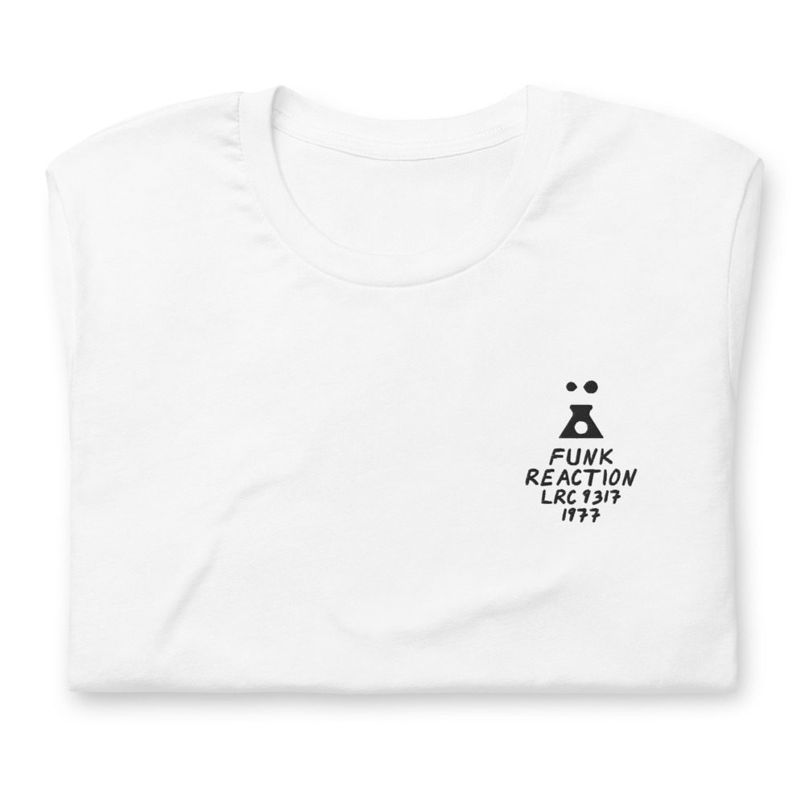
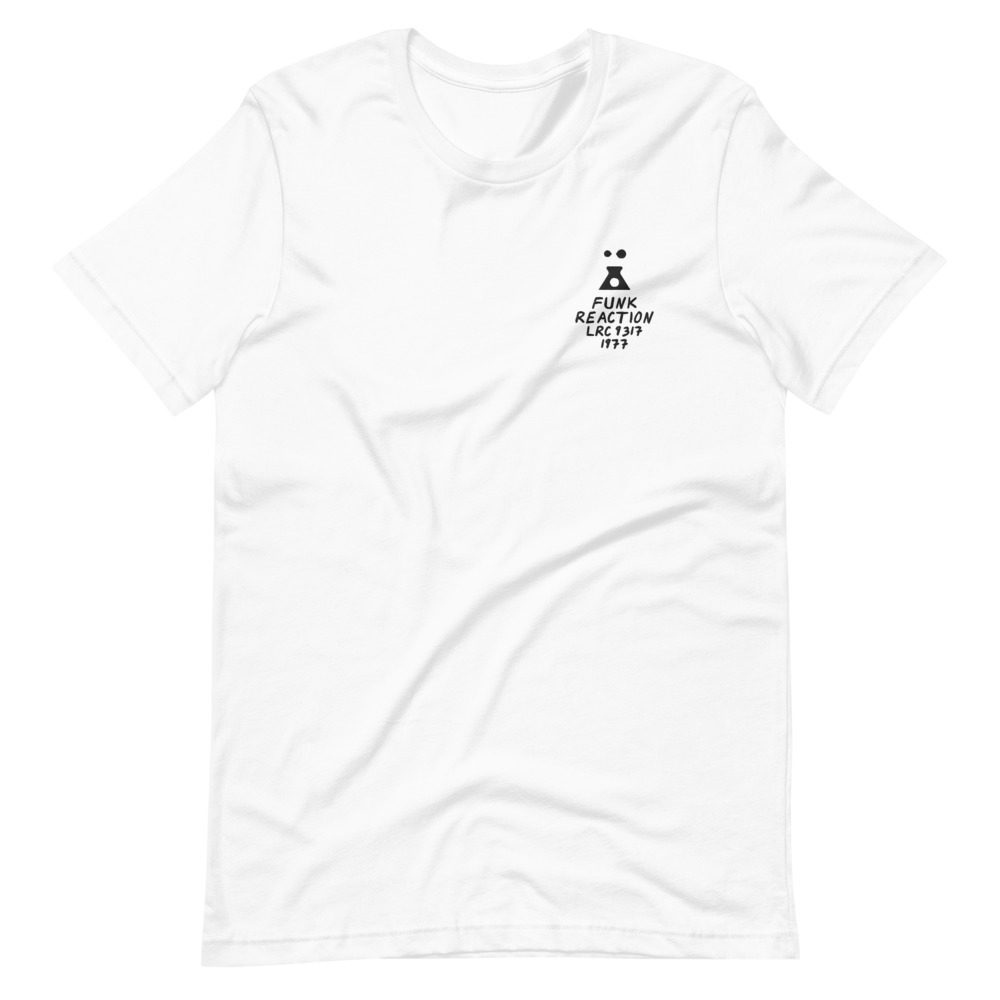

Lonnie Smith – Funk Reaction
LP · Lester Radio Corporation LRC 9317 · 1977
Ungraded, checked before it ships
Comes with its own shirt: a white tee embroidered on the chest with my drawing of the cover over its title, catalog number and year. Pick a size at checkout. It’s made for you and ships on its own.


Buy $114
Recorded in June 1977 at Media Sound, ODO and Chelsea Studios. Among the horns the jacket lists a Dominic Menardo, which Discogs credits to Domenico Monardo. That October he had a number one single as Meco, with the theme from Star Wars.
Side 1
- Funk Reaction5:51
- For The Love Of It6:10
- Babbitt’s Other Song6:12
Side 2
- It’s Changed6:12
- When The Night Is Right7:12
- All In My Mind6:15
Bass
Bob Babbitt, Francisco Centeno, Jim Finnen, Will Lee
Drums
Allan Schwartzberg, Gary Mure, Jimmy Young, Steve Gadd
Guitar
Jerry Friedman, Lance Quinn, Richie Hohenberger
Horns
Alan Rubin, Barry Rogers, David Taylor, Eddie Daniels, George Young, Joe Randazzo, Joe Shepley, John Frosk, Lew Del Gatto, Marvin Stamm, Meco Monardo, Randy Brecker
Keyboards
Moe Daniels, Pat Rebillot, Paul Griffin, Samuel Jonathan Johnson, Yaron Gershovsky
Organ
Lonnie Smith
Percussion
Jimmy Maelen, Rubens Bassini
Vocals
Denise Wooten, Gene Scott, Patricia Johnson
Tenor Saxophone
Eddie Daniels
Piano
Yaron Gershovsky
Produced by Sonny Lester · Conducted by Brad Baker